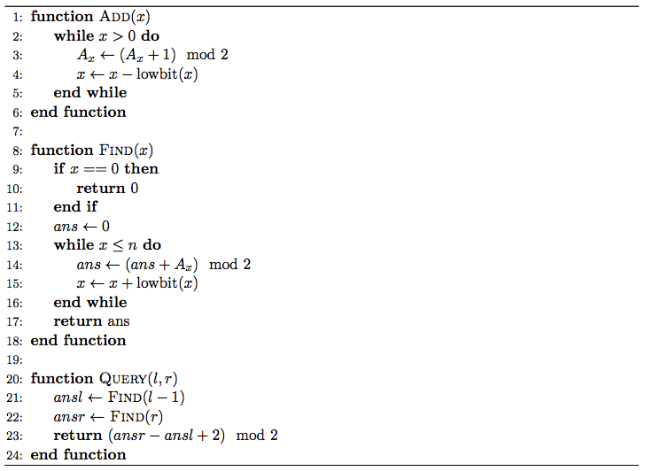

漆黑的晚上，九条可怜躺在床上辗转反侧。难以入眠的她想起了若干年前她的一次悲惨的 OI 比赛经历。那是一道基础的树状数组题。
给出一个长度为 $n$ 的数组 $A$，初始值都为 $0$，接下来进行 $m$ 次操作，操作有两种：
1 x，表示将 $A_x$ 变成 $(A_x + 1) \bmod 2$。
2 l r，表示询问 $\displaystyle \left( \sum_{i=l}^r A_i \right) \bmod 2$。
尽管那个时候的可怜非常的 simple，但是她还是发现这题可以用树状数组做。当时非常 young 的她写了如下的算法：
其中 $\mathrm{lowbit}(x)$ 表示数字 $x$ 最低的非 $0$ 二进制位，例如 $\mathrm{lowbit}(5) = 1, \mathrm{lowbit}(12) = 4$。进行第一类操作的时候就调用 $\mathrm{Add}(x)$，第二类操作的时候答案就是 $\mathrm{Query}(l, r)$。
如果你对树状数组比较熟悉，不难发现可怜把树状数组写错了：$\mathrm{Add}$ 和 $\mathrm{Find}$ 中 $x$ 变化的方向反了。因此这个程序在最终测试时华丽地爆 $0$ 了。
然而奇怪的是，在当时，这个程序通过了出题人给出的大样例——这也是可怜没有进行对拍的原因。
现在，可怜想要算一下，这个程序回答对每一个询问的概率是多少，这样她就可以再次的感受到自己是一个多么非的人了。然而时间已经过去了很多年，即使是可怜也没有办法完全回忆起当时的大样例。幸运的是，她回忆起了大部分内容，唯一遗忘的是每一次第一类操作的 $x$ 的值，因此她假定这次操作的 $x$ 是在 $\left[ l_i, r_i \right]$ 范围内等概率均匀随机的。
具体来说，可怜给出了一个长度为 $n$ 的数组 $A$，初始为 $0$，接下来进行了 $m$ 次操作：
1 l r，表示在区间 $\left[ l, r \right]$ 中等概率选取一个 $x$ 并执行 $\mathrm{Add}(x)$。
2 l r, 表示询问执行 $\mathrm{Query}(l, r)$ 得到的结果是正确的概率是多少。
第一行包含两个正整数 $n, m$ ($n, m \leq 10^5$) 表示数组的大小和询问的个数。
接下来 $m$ 行每行描述一个操作，格式如题目描述中所示。
对于每组询问，输出一行一个整数表示答案。如果答案化为最简分数后形如 $\dfrac xy$，那么你只需要输出 $x \times y^{-1} \bmod {998244353}$ 后的值。(即输出答案模 $998244353$)
考虑题目描述中的 "树状数组算法" 实际上在做什么操作。注意到平常我们用树状数组维护的是某种 "前缀和"，然后进行 $\mathrm{Find}(x)$ 就能得到 $A_1 + A_2 + \cdots + A_x$ 的值。
然而，题目中的树状数组，其实维护的序列的 "后缀和"。也就是说，对它 $\mathrm{Find}(x)$，我们可以得到 $A_x + A_{x+1} + \cdots + A_n$ 的值。这个证明是非常容易的，这里就留给读者了。
因此，对它进行 $\mathrm{Query}(l, r)$，我们就能得到 $A_{l-1} + A_l + A_{l+1} + \cdots + A_{r-1} + A_r$ 的值。然而，正确答案是 $A_l + A_{l+1} + A_{l+2} + \cdots + A_{r-1} + A_r$，因此输出正确当且仅当 $A_{l-1} = A_r$。
于是，我们就把问题转化成了 (以下运算均在环 $\mathbb Z_2$ 下进行)：
区间随机 (选位置) 加数。
询问两个位置 ($l - 1$ 和 $r$) 值相同的概率。
当然，聪明的小伙伴已经发现，这里又多了一个历史遗留问题：如果 $l = 1$ 怎么办。A: 这个放在后面处理。
设被询问的两个位置分别为 $u, v$ ($u < v$)。注意到 $A_u$ 和 $A_v$ 值相同当且仅当 $A_u \oplus A_v = 0$，因此下面我们只考虑 $A_u \oplus A_v$ 的取值情况。
在说这个之前，先来讲一个显然的引理：
(概率合并引理) 设独立随机变量 $a, b \in \mathbb Z_2$。设 $a, b$ 为 $1$ 的概率分别为 $p_a, p_b$，则 $a \oplus b$ 为 $1$ 的概率为 $p_a + p_b - 2 p_a p_b$。
证明：略。它为我们下文的标记合并打下了重要的基础。
现在，和 [uoj285]数据分块鸡 类似，我们考虑一次修改 $l, r$ 对它们的贡献，可以分为以下 $4$ 种情形：
$l \leq u < v \leq r$。即修改区间完全包含 $u, v$ 两个点。
此时，有 $\dfrac 2 {r - l + 1}$ 的概率会改变 $A_u \oplus A_v$ 的值，$\dfrac {r - l - 1} {r - l + 1}$ 的概率不改变 $A_u \oplus A_v$ 的值。
$l \leq u \leq r < v$。即修改区间只包含 $u$，不包含 $v$。
此时，有 $\dfrac 1 {r - l + 1}$ 的概率改变 $A_u \oplus A_v$ 的值，$\dfrac {r - l} {r - l + 1}$ 的概率不改变。
$u < l \leq v \leq r$。即修改区间只包含 $v$，不包含 $u$。
这种情形 (情形 3) 和情形 2 完全一样，这里就略去了。
剩下所有情况。即修改区间既不包含 $u$，也不包含 $v$。
显然，这种修改对 $u, v$ 不产生影响，当然也不会改变 $A_u \oplus A_v$ 的值啦。
因此，我们就得到了一个不错的暴力做法 (50pts)：
对于每组询问 $u, v$，考察它前面的所有修改 $l, r$，根据前面的讨论，算出每个修改改变 "$A_u \oplus A_v$ 的值" 的概率，由 "概率合并引理" 进行合并即可 (因为每次修改可以看成加上一个 $\texttt 0/\texttt 1$ 随机变量，最后的结果就是若干个随机变量的和)。
那该怎么进行优化呢？
和 [uoj285]数据分块鸡 一样，我们还是可以吧修改操作看成一个二维平面上的点，然后进行二维数点。
不过这个二维数点就更加鬼畜了，它的每次询问是对点集的一个前缀进行查询，也就是说，它是动！态！二！维！数！点！
于是可持久化线段树也不能很好的使用了，我们只能使用最后的武器——树套树 (二维线段树)。
对于每一个点 $(x, y)$，我们将 $y$ 坐标插入到外层线段树中，然后分成 $O \left( \log n \right)$ 个节点——对应到 $O \left( \log n \right)$ 棵内层线段树，接着将对应的 $x$ 坐标插入到内层线段树中。由于空间复杂度原因，内层线段树需要使用动态开点的线段树实现。
在线段树中，我们需要维护两个值：一个是 $\dfrac 1 {r - l + 1}$，另一个是 $\dfrac 2 {r - l + 1}$，因为情形 1 的概率是其余情形的概率的 $2$ 倍。
节点合并时，仍然采用 "概率合并引理" 进行合并。
询问时，直接查询对应的区间即可，是单次 $O \left( \log^2 n \right)$ 的。由于 "概率合并引理" 中的合并运算同时具有交换律和结合律，因此直接将上述 $3$ 种情形的概率合并起来即可。
是时候讨论 $l = 1$ 的情况了。此时，正确答案为 $A_1 + A_2 + \cdots + A_{r-1} + A_r$，然而对它进行 $\mathrm{Query}(l, r)$，由于 $\mathrm{Find}(l - 1) = \mathrm{Find}(0)$，而 Find(x) 函数当 $x = 0$ 时会自动返回 $0$！
因此，执行 $\mathrm{Query}(l, r)$ 所得到的输出等于 $A_r + A_{r+1} + \cdots + A_{n-1} + A_n$，因此，只有当 $\displaystyle \sum_{i=1}^n A_i \equiv A_r \pmod 2$ 时，输出才是正确的。
这个式子看似很复杂，其实并不然。注意左端是对所有 $A_i$ 求和。我们每进行一次修改操作，$\displaystyle \sum_{i=1}^n A_i$ 的值一定 $+ 1$ (想一想，为(xian)什(ran)么(di)？)。因此，上式左端的值就等于询问的次数 $q_0$。
于是，输出正确当且仅当 $q_0 = A_r$。
类似地，和上面一样讨论。不过这次简单了，只有一种有效情形：
记上式为 $q_0 = A_x$，则对于一次修改操作 $l, r$，当且仅当 $l \leq x \leq r$ 时，有 $\dfrac 1 {r - l + 1}$ 的概率改变 $A_x$ 的值，$\dfrac {r - l} {r - l + 1}$ 的概率不改变；如果 $l, r$ 不满足 $l \leq x \leq r$，则对 $A_x$ 根本不产生影响。
因此也可以使用树套树 (二维线段树) 来解决问题。
总时间复杂度 $O \left( m \log^2 n \right)$。
#include <bits/stdc++.h>
#define N 100054
#define segcY int M = (L + R - 1) >> 1, lc = id << 1, rc = lc | 1
typedef long long ll;
const ll mod = 998244353;
int n, q;
inline void edd(int &x, const int y) {x = ((ll)x + y - 2ll * x * y) % mod;}
ll PowerMod(ll a, int n, ll c = 1) {for (; n; n >>= 1, a = a * a % mod) if (n & 1) c = c * a % mod; return c;}
namespace STST {
struct nodeX {int v1, v2, lc, rc;} x[20030731];
int root[N * 4], cnt = 0, param[3];
int addX(int id, int L, int R, int h, int v) {
if (!id) id = ++cnt; edd(x[id].v1, v), edd(x[id].v2, v * 2);
if (L == R) return id; int M = (L + R - 1) >> 1;
h <= M ? x[id].lc = addX(x[id].lc, L, M, h, v) : x[id].rc = addX(x[id].rc, M + 1, R, h, v);
return id;
}
int rangeX(int id, int L, int R, int ql, int qr, bool Double = false) {
if (!id || (ql <= L && R <= qr)) return Double ? x[id].v2 : x[id].v1;
int M = (L + R - 1) >> 1, ret = 0;
if (ql <= M) edd(ret, rangeX(x[id].lc, L, M, ql, qr, Double));
if (qr > M) edd(ret, rangeX(x[id].rc, M + 1, R, ql, qr, Double));
return ret;
}
void addY(int id, int L, int R, int h, int x, int v) {
root[id] = addX(root[id], 1, n, x, v);
if (L == R) return;
segcY; h <= M ? addY(lc, L, M, h, x, v) : addY(rc, M + 1, R, h, x, v);
}
int rangeY(int id, int L, int R, int ql, int qr) {
if (ql <= L && R <= qr) return rangeX(root[id], 1, n, param[0], param[1], param[2]);
segcY, ret = 0;
if (ql <= M) edd(ret, rangeY(lc, L, M, ql, qr));
if (qr > M) edd(ret, rangeY(rc, M + 1, R, ql, qr));
return ret;
}
inline int query(int xl, int xu, int yl, int yu, bool Double = false) {return param[0] = xl, param[1] = xu, param[2] = Double, rangeY(1, 1, n, yl, yu);}
}
int main() {
int op, l, r, ans, parity = 1;
scanf("%d%d", &n, &q);
for (; q; --q)
if (scanf("%d%d%d", &op, &l, &r), op == 1)
parity ^= 1, STST::addY(1, 1, n, r, l, PowerMod(r - l + 1, mod - 2));
else {
--l ? (
ans = 1 - STST::query(1, l, r, n, true),
edd(ans, STST::query(1, l, l, r - 1)),
edd(ans, STST::query(l + 1, r, r, n))
) : edd(ans = parity, STST::query(1, r, r, n));
printf("%lld\n", ans + (ans >> 31 & mod));
}
return 0;
}
坑1：要尤其注意像 $l = 1$ 这样的边界情况，否则可能会挂的很惨。
坑2：根据 "概率合并引理" 合并概率的时候，注意计算时不要溢出。